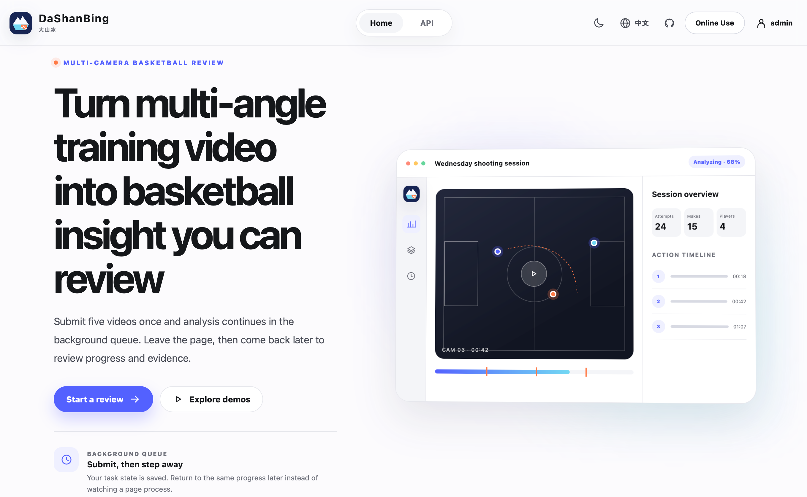

截图使用确定的测试账户、任务和配额。结果页包含媒体空状态；功能测试另外覆盖媒体切换、加载、失败重试和结果标签。参考站通过 Browser 检查，原始品牌与篮球业务继续保留。
弹窗、空状态与下方内容
此处按 390 / 1440px 展示；中间宽度选择会使用 1440px 的交互状态截图。
断点与矮窗口
英文深色模式，检查页面溢出、目录折叠与底栏可达性。
用户提供的首页对照
以下两张保持用户原始视口和像素，不做等比例差异计算。其他页面的对应参考站入口列在每张截图上方；参考站账户内容未保存到仓库。
MinerU 官网首页 · 图一
大山冰改造前首页 · 图二
